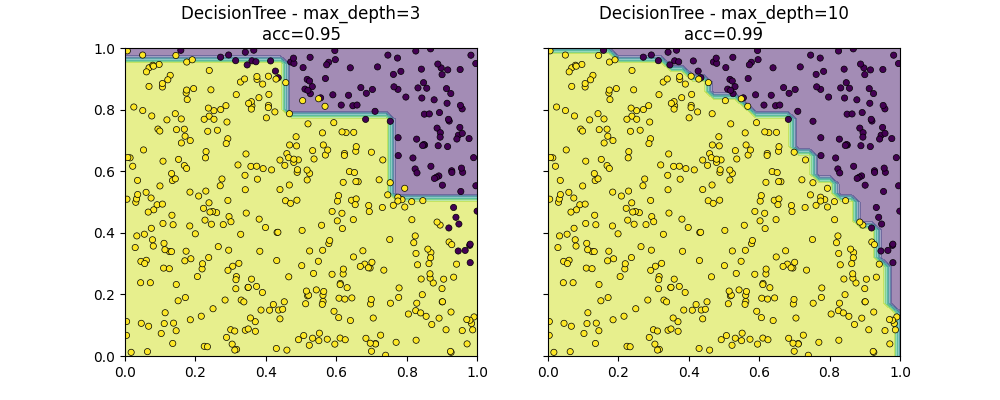

Note
Go to the end to download the full example code.
Decision Tree and Logistic Regression¶
The notebook demonstrates the model DecisionTreeLogisticRegression which replaces the decision based on one variable by a logistic regression.
Iris dataset and logistic regression¶
The following code shows the border defined by two machine learning models on the Iris dataset.
import numpy
from scipy.spatial.distance import cdist
import matplotlib.pyplot as plt
from pandas import DataFrame
from tqdm import tqdm
from sklearn.datasets import load_iris
from sklearn.linear_model import LogisticRegression
from sklearn.model_selection import train_test_split
from sklearn.tree import DecisionTreeClassifier
from mlinsights.mlmodel import DecisionTreeLogisticRegression
from mlinsights.mltree import predict_leaves
def plot_classifier_decision_zone(clf, X, y, title=None, ax=None):
if ax is None:
ax = plt.gca()
x_min, x_max = X[:, 0].min() - 1, X[:, 0].max() + 1
y_min, y_max = X[:, 1].min() - 1, X[:, 1].max() + 1
dhx = (x_max - x_min) / 100
dhy = (y_max - y_min) / 100
xx, yy = numpy.meshgrid(
numpy.arange(x_min, x_max, dhx), numpy.arange(y_min, y_max, dhy)
)
Z = clf.predict(numpy.c_[xx.ravel(), yy.ravel()])
Z = Z.reshape(xx.shape)
ax.contourf(xx, yy, Z, alpha=0.5)
ax.scatter(X[:, 0], X[:, 1], c=y, s=20, edgecolor="k", lw=0.5)
if title is not None:
ax.set_title(title)
iris = load_iris()
X = iris.data[:, [0, 2]]
y = iris.target
y = y % 2
X_train, X_test, y_train, y_test = train_test_split(X, y, test_size=0.6, shuffle=True)
lr = LogisticRegression()
lr.fit(X_train, y_train)
dt = DecisionTreeClassifier(criterion="entropy")
dt.fit(X_train, y_train)
The logistic regression is not very stable on this sort of problem. No linear separator can work on this dataset. Let’s dig into it.
DecisionTreeLogisticRegression¶
dtlr = DecisionTreeLogisticRegression(
estimator=LogisticRegression(solver="liblinear"),
min_samples_leaf=10,
min_samples_split=10,
max_depth=1,
fit_improve_algo="none",
)
dtlr.fit(X_train, y_train)
dtlr2 = DecisionTreeLogisticRegression(
estimator=LogisticRegression(solver="liblinear"),
min_samples_leaf=4,
min_samples_split=4,
max_depth=10,
fit_improve_algo="intercept_sort_always",
)
dtlr2.fit(X_train, y_train)
fig, ax = plt.subplots(2, 2, figsize=(10, 8))
plot_classifier_decision_zone(
dtlr,
X_train,
y_train,
ax=ax[0, 0],
title="DecisionTreeLogisticRegression\ndepth=%d - train" % dtlr.tree_depth_,
)
plot_classifier_decision_zone(
dtlr2,
X_train,
y_train,
ax=ax[0, 1],
title="DecisionTreeLogisticRegression\ndepth=%d - train" % dtlr2.tree_depth_,
)
plot_classifier_decision_zone(
dtlr,
X_test,
y_test,
ax=ax[1, 0],
title="DecisionTreeLogisticRegression\ndepth=%d - test" % dtlr.tree_depth_,
)
plot_classifier_decision_zone(
dtlr2,
X_test,
y_test,
ax=ax[1, 1],
title="DecisionTreeLogisticRegression\ndepth=%d - test" % dtlr2.tree_depth_,
)
A first example¶
def random_set_simple(n):
X = numpy.random.rand(n, 2)
y = ((X[:, 0] ** 2 + X[:, 1] ** 2) <= 1).astype(numpy.int32).ravel()
return X, y
X, y = random_set_simple(2000)
X_train, X_test, y_train, y_test = train_test_split(X, y)
dt = DecisionTreeClassifier(max_depth=3)
dt.fit(X_train, y_train)
dt8 = DecisionTreeClassifier(max_depth=10)
dt8.fit(X_train, y_train)
fig, ax = plt.subplots(1, 2, figsize=(10, 4), sharey=True)
plot_classifier_decision_zone(
dt,
X_test,
y_test,
ax=ax[0],
title="DecisionTree - max_depth=%d\nacc=%1.2f"
% (dt.max_depth, dt.score(X_test, y_test)),
)
plot_classifier_decision_zone(
dt8,
X_test,
y_test,
ax=ax[1],
title="DecisionTree - max_depth=%d\nacc=%1.2f"
% (dt8.max_depth, dt8.score(X_test, y_test)),
)
ax[0].set_xlim([0, 1])
ax[1].set_xlim([0, 1])
ax[0].set_ylim([0, 1])
dtlr = DecisionTreeLogisticRegression(
max_depth=3, fit_improve_algo="intercept_sort_always", verbose=1
)
dtlr.fit(X_train, y_train)
dtlr8 = DecisionTreeLogisticRegression(
max_depth=10, min_samples_split=4, fit_improve_algo="intercept_sort_always"
)
dtlr8.fit(X_train, y_train)
fig, ax = plt.subplots(1, 2, figsize=(10, 4), sharey=True)
plot_classifier_decision_zone(
dtlr,
X_test,
y_test,
ax=ax[0],
title="DecisionTreeLogReg - depth=%d\nacc=%1.2f"
% (dtlr.tree_depth_, dtlr.score(X_test, y_test)),
)
plot_classifier_decision_zone(
dtlr8,
X_test,
y_test,
ax=ax[1],
title="DecisionTreeLogReg - depth=%d\nacc=%1.2f"
% (dtlr8.tree_depth_, dtlr8.score(X_test, y_test)),
)
ax[0].set_xlim([0, 1])
ax[1].set_xlim([0, 1])
ax[0].set_ylim([0, 1])
- 

[DTLR ] trained acc 0.96 N=1500
[DTLRI] change intercept 11.339838 --> 10.479621 in [0.353608, 16.298707]
[DTLR*] above: n_class=2 N=1500 - 1095/1500
[DTLR ] trained acc 0.98 N=1095
[DTLRI] change intercept 5.941792 --> 2.141152 in [0.090548, 3.113309]
[DTLR*] above: n_class=2 N=1095 - 765/1500
[DTLR ] trained acc 0.99 N=765
[DTLRI] change intercept 5.938701 --> 1.801736 in [-0.234086, 2.286637]
[DTLR*] below: n_class=2 N=1095 - 330/1500
[DTLR ] trained acc 0.96 N=330
[DTLRI] change intercept 4.766387 --> 1.753661 in [0.157104, 2.312669]
[DTLR*] below: n_class=2 N=1500 - 405/1500
[DTLR ] trained acc 0.76 N=405
[DTLRI] change intercept 5.661565 --> 6.622864 in [5.642996, 9.176333]
[DTLR*] above: n_class=2 N=405 - 163/1500
[DTLR ] trained acc 0.59 N=163
[DTLRI] change intercept 1.717183 --> 1.362206 in [1.140047, 1.557262]
[DTLR*] below: n_class=1 N=405 - 242/1500
(0.0, 1.0)
def draw_border(
clr,
X,
y,
fct=None,
incx=0.1,
incy=0.1,
figsize=None,
border=True,
ax=None,
s=10.0,
linewidths=0.1,
):
h = 0.02
x_min, x_max = X[:, 0].min() - incx, X[:, 0].max() + incx
y_min, y_max = X[:, 1].min() - incy, X[:, 1].max() + incy
xx, yy = numpy.meshgrid(
numpy.arange(x_min, x_max, h), numpy.arange(y_min, y_max, h)
)
if fct is None:
Z = clr.predict(numpy.c_[xx.ravel(), yy.ravel()])
else:
Z = fct(clr, numpy.c_[xx.ravel(), yy.ravel()])
# Put the result into a color plot
cmap = plt.cm.tab20
Z = Z.reshape(xx.shape)
if ax is None:
fig, ax = plt.subplots(1, 1, figsize=figsize or (4, 3))
ax.pcolormesh(xx, yy, Z, cmap=cmap)
# Plot also the training points
ax.scatter(
X[:, 0], X[:, 1], c=y, edgecolors="k", cmap=cmap, s=s, linewidths=linewidths
)
ax.set_xlim(xx.min(), xx.max())
ax.set_ylim(yy.min(), yy.max())
return ax
fig, ax = plt.subplots(1, 2, figsize=(14, 4))
draw_border(dt, X_test, y_test, border=False, ax=ax[0])
ax[0].set_title("Iris")
draw_border(dt, X, y, border=False, ax=ax[1], fct=lambda m, x: predict_leaves(m, x))
ax[1].set_title("DecisionTree")
Text(0.5, 1.0, 'DecisionTree')
fig, ax = plt.subplots(6, 4, figsize=(12, 16))
for i, depth in tqdm(enumerate((1, 2, 3, 4, 5, 6))):
dtl = DecisionTreeLogisticRegression(
max_depth=depth, fit_improve_algo="intercept_sort_always", min_samples_leaf=2
)
dtl.fit(X_train, y_train)
draw_border(dtl, X_test, y_test, border=False, ax=ax[i, 0], s=4.0)
draw_border(
dtl,
X,
y,
border=False,
ax=ax[i, 1],
fct=lambda m, x: predict_leaves(m, x),
s=4.0,
)
ax[i, 0].set_title(
"Depth=%d nodes=%d score=%1.2f"
% (dtl.tree_depth_, dtl.n_nodes_, dtl.score(X_test, y_test))
)
ax[i, 1].set_title("DTLR Leaves zones")
dtl = DecisionTreeClassifier(max_depth=depth)
dtl.fit(X_train, y_train)
draw_border(dtl, X_test, y_test, border=False, ax=ax[i, 2], s=4.0)
draw_border(
dtl,
X,
y,
border=False,
ax=ax[i, 3],
fct=lambda m, x: predict_leaves(m, x),
s=4.0,
)
ax[i, 2].set_title(
"Depth=%d nodes=%d score=%1.2f"
% (dtl.max_depth, dtl.tree_.node_count, dtl.score(X_test, y_test))
)
ax[i, 3].set_title("DT Leaves zones")
for k in range(ax.shape[1]):
ax[i, k].get_xaxis().set_visible(False)
![Depth=1 nodes=1 score=0.93, DTLR Leaves zones, Depth=1 nodes=3 score=0.81, DT Leaves zones, Depth=2 nodes=3 score=0.73, DTLR Leaves zones, Depth=2 nodes=7 score=0.88, DT Leaves zones, Depth=3 nodes=7 score=0.84, DTLR Leaves zones, Depth=3 nodes=15 score=0.95, DT Leaves zones, Depth=4 nodes=13 score=0.92, DTLR Leaves zones, Depth=4 nodes=29 score=0.96, DT Leaves zones, Depth=5 nodes=21 score=0.95, DTLR Leaves zones, Depth=5 nodes=47 score=0.99, DT Leaves zones, Depth=6 nodes=33 score=0.96, DTLR Leaves zones, Depth=6 nodes=61 score=0.99, DT Leaves zones](../_images/sphx_glr_plot_decision_tree_logreg_006.png)
0it [00:00, ?it/s]
1it [00:00, 8.84it/s]
2it [00:00, 6.81it/s]
3it [00:00, 5.75it/s]
4it [00:00, 5.54it/s]
5it [00:00, 5.18it/s]
6it [00:01, 4.77it/s]
6it [00:01, 5.27it/s]
Another example designed to fail¶
Designed to be difficult with a regular decision tree.
def random_set(n):
X = numpy.random.rand(n, 2)
y = (
(cdist(X, numpy.array([[0.5, 0.5]]), metric="minkowski", p=1) <= 0.5)
.astype(numpy.int32)
.ravel()
)
return X, y
X, y = random_set(2000)
X_train, X_test, y_train, y_test = train_test_split(X, y)
dt = DecisionTreeClassifier(max_depth=3)
dt.fit(X_train, y_train)
dt8 = DecisionTreeClassifier(max_depth=10)
dt8.fit(X_train, y_train)
fig, ax = plt.subplots(1, 2, figsize=(10, 4), sharey=True)
plot_classifier_decision_zone(
dt,
X_test,
y_test,
ax=ax[0],
title="DecisionTree - max_depth=%d\nacc=%1.2f"
% (dt.max_depth, dt.score(X_test, y_test)),
)
plot_classifier_decision_zone(
dt8,
X_test,
y_test,
ax=ax[1],
title="DecisionTree - max_depth=%d\nacc=%1.2f"
% (dt8.max_depth, dt8.score(X_test, y_test)),
)
ax[0].set_xlim([0, 1])
ax[1].set_xlim([0, 1])
ax[0].set_ylim([0, 1])
(0.0, 1.0)
The example is a square rotated by 45 degrees. Every sample in the square is a positive sample, every sample outside is a negative one. The tree approximates the border with horizontal and vertical lines.
dtlr = DecisionTreeLogisticRegression(
max_depth=3, fit_improve_algo="intercept_sort_always", verbose=1
)
dtlr.fit(X_train, y_train)
dtlr8 = DecisionTreeLogisticRegression(
max_depth=10, min_samples_split=4, fit_improve_algo="intercept_sort_always"
)
dtlr8.fit(X_train, y_train)
fig, ax = plt.subplots(1, 2, figsize=(10, 4), sharey=True)
plot_classifier_decision_zone(
dtlr,
X_test,
y_test,
ax=ax[0],
title="DecisionTreeLogReg - depth=%d\nacc=%1.2f"
% (dtlr.tree_depth_, dtlr.score(X_test, y_test)),
)
plot_classifier_decision_zone(
dtlr8,
X_test,
y_test,
ax=ax[1],
title="DecisionTreeLogReg - depth=%d\nacc=%1.2f"
% (dtlr8.tree_depth_, dtlr8.score(X_test, y_test)),
)
ax[0].set_xlim([0, 1])
ax[1].set_xlim([0, 1])
ax[0].set_ylim([0, 1])
[DTLR ] trained acc 0.46 N=1500
[DTLRI] change intercept 0.031077 --> 0.047175 in [-0.061557, 0.162851]
[DTLR*] above: n_class=2 N=1500 - 749/1500
[DTLR ] trained acc 0.74 N=749
[DTLRI] change intercept -1.090538 --> -1.104718 in [-3.351505, 0.757671]
[DTLR*] above: n_class=2 N=749 - 380/1500
[DTLR ] trained acc 0.75 N=380
[DTLRI] change intercept 0.040429 --> -1.003865 in [-1.780948, -0.464175]
[DTLR*] below: n_class=2 N=749 - 369/1500
[DTLR ] trained acc 0.72 N=369
[DTLRI] change intercept -0.850604 --> 0.087702 in [-0.461257, 0.769244]
[DTLR*] below: n_class=2 N=1500 - 751/1500
[DTLR ] trained acc 0.72 N=751
[DTLRI] change intercept 3.253194 --> 3.352934 in [1.485724, 4.947384]
[DTLR*] above: n_class=2 N=751 - 367/1500
[DTLR ] trained acc 0.71 N=367
[DTLRI] change intercept 0.952998 --> 0.042261 in [-0.294482, 0.408440]
[DTLR*] below: n_class=2 N=751 - 384/1500
[DTLR ] trained acc 0.76 N=384
[DTLRI] change intercept 0.941037 --> 2.034576 in [1.496790, 2.717028]
(0.0, 1.0)
Leave zones¶
# We use method *decision_path* to understand which leaf is responsible
# for which zone.
fig, ax = plt.subplots(1, 2, figsize=(14, 4))
draw_border(dtlr, X_test, y_test, border=False, ax=ax[0])
ax[0].set_title("Iris")
draw_border(dtlr, X, y, border=False, ax=ax[1], fct=lambda m, x: predict_leaves(m, x))
ax[1].set_title("DecisionTreeLogisticRegression")
Text(0.5, 1.0, 'DecisionTreeLogisticRegression')
fig, ax = plt.subplots(6, 4, figsize=(12, 16))
for i, depth in tqdm(enumerate((1, 2, 3, 4, 5, 6))):
dtl = DecisionTreeLogisticRegression(
max_depth=depth, fit_improve_algo="intercept_sort_always", min_samples_leaf=2
)
dtl.fit(X_train, y_train)
draw_border(dtl, X_test, y_test, border=False, ax=ax[i, 0], s=4.0)
draw_border(
dtl,
X,
y,
border=False,
ax=ax[i, 1],
fct=lambda m, x: predict_leaves(m, x),
s=4.0,
)
ax[i, 0].set_title(
"Depth=%d nodes=%d score=%1.2f"
% (dtl.tree_depth_, dtl.n_nodes_, dtl.score(X_test, y_test))
)
ax[i, 1].set_title("DTLR Leaves zones")
dtl = DecisionTreeClassifier(max_depth=depth)
dtl.fit(X_train, y_train)
draw_border(dtl, X_test, y_test, border=False, ax=ax[i, 2], s=4.0)
draw_border(
dtl,
X,
y,
border=False,
ax=ax[i, 3],
fct=lambda m, x: predict_leaves(m, x),
s=4.0,
)
ax[i, 2].set_title(
"Depth=%d nodes=%d score=%1.2f"
% (dtl.max_depth, dtl.tree_.node_count, dtl.score(X_test, y_test))
)
ax[i, 3].set_title("DT Leaves zones")
![Depth=1 nodes=1 score=0.54, DTLR Leaves zones, Depth=1 nodes=3 score=0.67, DT Leaves zones, Depth=2 nodes=3 score=0.75, DTLR Leaves zones, Depth=2 nodes=7 score=0.74, DT Leaves zones, Depth=3 nodes=7 score=0.56, DTLR Leaves zones, Depth=3 nodes=15 score=0.79, DT Leaves zones, Depth=4 nodes=15 score=0.80, DTLR Leaves zones, Depth=4 nodes=29 score=0.86, DT Leaves zones, Depth=5 nodes=31 score=0.79, DTLR Leaves zones, Depth=5 nodes=49 score=0.90, DT Leaves zones, Depth=6 nodes=59 score=0.84, DTLR Leaves zones, Depth=6 nodes=73 score=0.92, DT Leaves zones](../_images/sphx_glr_plot_decision_tree_logreg_010.png)
0it [00:00, ?it/s]
2it [00:00, 10.45it/s]
4it [00:00, 6.72it/s]
5it [00:00, 5.57it/s]
6it [00:01, 4.72it/s]
6it [00:01, 5.43it/s]
Total running time of the script: (0 minutes 7.612 seconds)